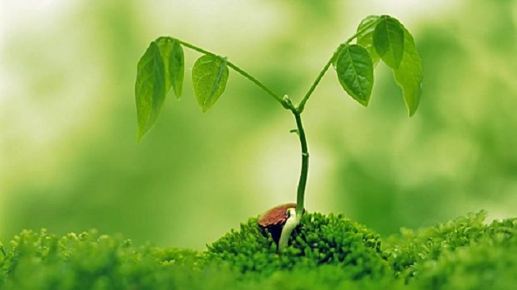
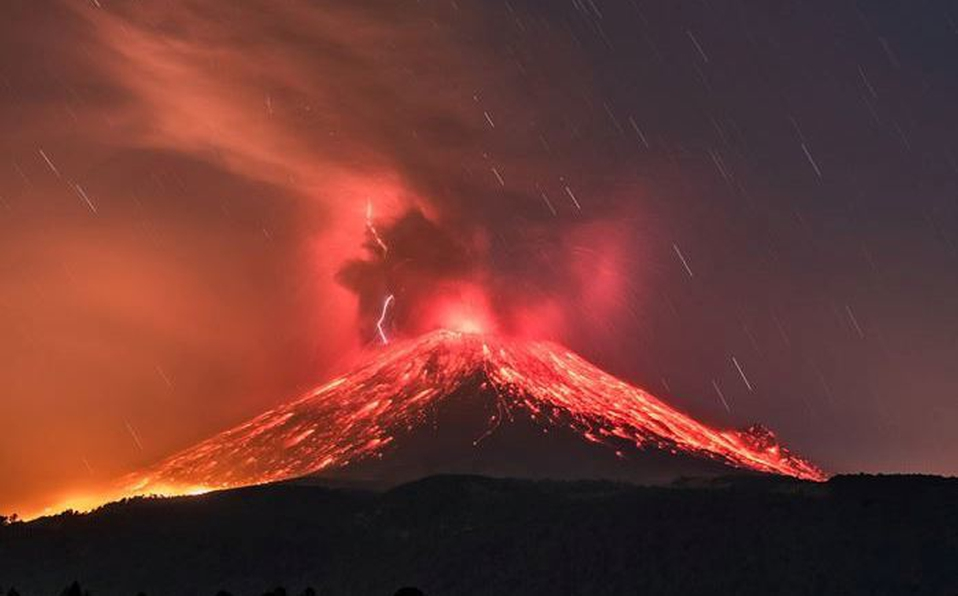

Dia Internacional de la madre Tierra 22 de abril

- 
- 
Realizado por:
Agustin Uriel Ramos Zuñiga
4.-"G"
Especialidad:
Progrmacion
Submódulo:
Desarrolla Aplicaciones Moviles
Docente:
Lic. José Antonio Gómez Hernández
4.-"G"
Progrmacion
Desarrolla Aplicaciones Moviles
Lic. José Antonio Gómez Hernández
Desde el año de 1962, el Senador y activista Gaylord Nelson venía preparando el espacio para que el tema ambiental hiciera parte de la agenda gubernamental en los Estados Unidos, En ese tiempo, los activistas y grupos ecológicos eran considerados excluidos y no se les daba ninguna importancia. En 1969 finalmente pudo convocar una gran cantidad de personas con el fin de pedir la inclusión del tema ambiental en la agenda del Congreso de los Estados Unidos. Después de casi diez años de lucha ante el gobierno, el Senador Gaylord Nelson logró que se estableciera el 22 de abril como Día Mundial de la Tierra en el año de 1970.
«Madre Tierra» es una expresión común utilizada para referirse al Planeta Tierra en diversos países y regiones, lo que demuestra la interdependencia existente entre los seres humanos, las demás especies vivas y el planeta que todos habitamos. La Tierra y sus ecosistemas son nuestro hogar. Para alcanzar un justo equilibrio entre las necesidades económicas, sociales y ambientales de las generaciones presentes y futuras, es necesario promover la armonía con la naturaleza y el planeta. Celebramos el Día Internacional de la Madre Tierra para recordar que el planeta y sus ecosistemas nos dan la vida y el sustento. Con este día, asumimos, además, la responsabilidad colectiva, como nos recordaba la Declaración de Río de 1992, de fomentar esta armonía con la naturaleza y la Madre Tierra. Este día nos brinda también la oportunidad de concienciar a todos los habitantes del planeta acerca de los problemas que afectan a la Tierra y a las diferentes formas de vida que en él se desarrollan.
Víctor Hugo, el autor de Los Miserables escribió: “Produce una inmensa tristeza pensar que la naturaleza habla mientras el genero humano no escucha.” Hoy estamos reunidos para intentar dialogar no sólo entre Estados sino con la naturaleza. Aunque muchas veces lo olvidamos, los seres humanos somos una de las fuerzas de la naturaleza. En verdad, todos venimos del mismo Big Bang que dio origen al universo. Aunque algunos solo ven la leña para el fuego, cuando cruzan el bosque. Tres preguntas son el punto de partida del debate de hoy: Primero: ¿Qué es la naturaleza? Una cosa, una fuente de recursos, un sistema, un hogar, una comunidad de seres y entes interdependientes. Segundo: ¿Existen reglas en la naturaleza? ¿Leyes naturales que gobiernan su integridad, interrelación, reproducción y transformación? Y tercero: ¿Nosotros como Estados y como sociedad estamos reconociendo, respetando y haciendo prevalecer esas reglas de la naturaleza? Francis Bacon decía que no se manda a la naturaleza sino obedeciéndola. El tiempo de los superhéroes y los superpoderes está llegando a su fin. La naturaleza no puede ser sometida a los caprichos de laboratorio. La ciencia y la tecnología lo pueden todo incluyendo la destrucción del propio mundo. Es el momento de hacer un alto en el camino, y reafirmar el principio precautorio frente a la geoingeniería y toda manipulación artificial del clima. Todas las nuevas tecnologías tienen que ser previamente evaluadas en sus impactos ambientales, sociales y económicos. La respuesta para un futuro no está en una invención científica sino en nuestra capacidad de escuchar a la naturaleza. La Economía Verde considera indispensable darle precio a los servicios gratuitos que plantas, animales y ecosistemas brindan a la humanidad en la lucha por la conservación de la biodiversidad, la depuración de las aguas, la polinización que realizan las abejas, la protección de los arrecifes coralinos y la regulación climática. Para la Economía Verde es necesario identificar las funciones específicas de los ecosistemas y la biodiversidad que puedan ser sujetas de valoración monetaria, evaluar su estado actual, definir el límite a partir del cual dejarían de prestar ese servicio, y concretar en términos económicos el costo de su conservación para desarrollar un mercado de servicios ambientales.
Imaginemos que usted forma parte del gobierno del país X en África subsahariana. Desea cumplir con el Objetivo de Desarrollo Sostenible No. 1 que reza: “acabar con la pobreza en todas sus formas en todas partes". Sin embargo, es consciente de la necesidad de implementar todos los 17 Objetivos, incluido el Objetivo 15, que busca: "Gestionar sosteniblemente los bosques, luchar contra la desertificación, detener e invertir la degradación de las tierras y detener la pérdida de biodiversidad.”